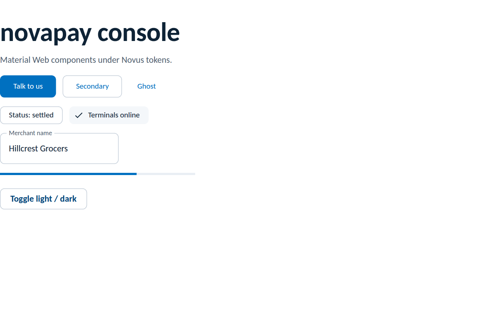

Themes
Teams following m3.material.io on the web use Material Web
(@material/web), Google's official Material Design 3 web components.
MD3's system tokens are plain CSS custom properties, which makes this the
cleanest Material pairing of all: point --md-sys-* at the Novus
variables once and every component follows, dark mode included, with no runtime
reads and no rebuild on theme flip. Verified against @material/web 2.5.
npm install novus-design-kit @material/webimport "novus-design-kit/js/novus-theme.js";
import "novus-design-kit/tokens.css";
import "./novus-material-web.css";
import "@material/web/button/filled-button.js";
import "@material/web/textfield/outlined-text-field.js";
// import each component you use/* novus-material-web.css */
:root {
--md-sys-color-primary: var(--accent);
--md-sys-color-on-primary: var(--text-on-accent);
--md-sys-color-primary-container: var(--accent-subtle);
--md-sys-color-on-primary-container: var(--accent-text);
--md-sys-color-secondary: var(--text-secondary);
--md-sys-color-secondary-container: var(--bg-subtle);
--md-sys-color-on-secondary-container: var(--text);
--md-sys-color-surface: var(--surface);
--md-sys-color-on-surface: var(--text);
--md-sys-color-on-surface-variant: var(--text-secondary);
--md-sys-color-surface-container: var(--bg-subtle);
--md-sys-color-surface-container-highest: var(--bg-muted);
--md-sys-color-outline: var(--border-strong);
--md-sys-color-outline-variant: var(--border);
--md-sys-color-error: var(--danger);
--md-sys-color-on-error: var(--text-on-accent);
--md-ref-typeface-plain: var(--font-sans); /* Carlito everywhere */
--md-ref-typeface-brand: var(--font-sans);
/* MD3 defaults to pill buttons; the kit is near-flat */
--md-filled-button-container-shape: var(--radius-md);
--md-outlined-button-container-shape: var(--radius-md);
--md-text-button-container-shape: var(--radius-md);
--md-outlined-text-field-container-shape: var(--radius-md);
}Because every mapping is a var() reference, the kit's dual-trigger
dark mode (OS preference and the persisted toggle from
novus-theme.js) flips the MD3 palette with zero extra code. This is
the difference from the MUI guide, where palette
colours must be re-read at runtime.
Rendered from this guide's own sample project, executed and verified on 2026-08-27 against @material/web 2.5.0 (Vite 8, novus-design-kit 0.3.0 from the public registry). The dark flip was exercised through the kit toggle in the same run.

--md-sys-*) first and reach for component tokens (--md-filled-button-*) only where a shape or density must be corrected toward the kit, as with the pill-to-radius change above.md-filled-button is the single primary action; everything else is outlined or text.